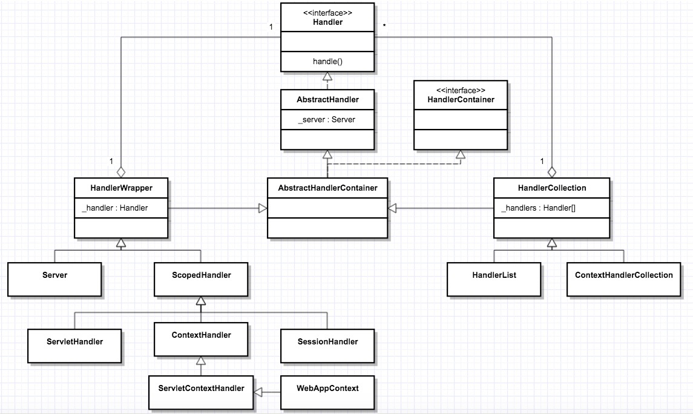
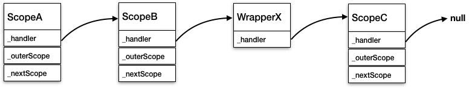
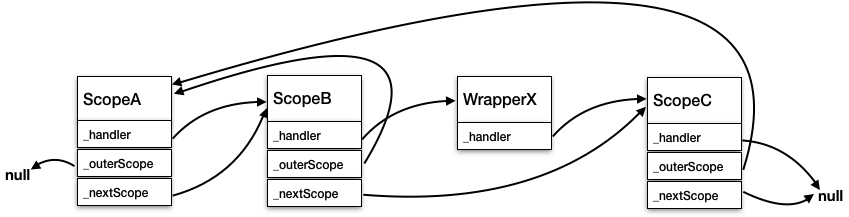

- 00 开篇词 Java程序员如何快速成长？.md.html
- 01 Web容器学习路径.md.html
- 02 HTTP协议必知必会.md.html
- 03 你应该知道的Servlet规范和Servlet容器.md.html
- 04 实战：纯手工打造和运行一个Servlet.md.html
- 05 Tomcat系统架构（上）： 连接器是如何设计的？.md.html
- 06 Tomcat系统架构（下）：聊聊多层容器的设计.md.html
- 07 Tomcat如何实现一键式启停？.md.html
- 08 Tomcat的“高层们”都负责做什么？.md.html
- 09 比较：Jetty架构特点之Connector组件.md.html
- 10 比较：Jetty架构特点之Handler组件.md.html
- 11 总结：从Tomcat和Jetty中提炼组件化设计规范.md.html
- 12 实战：优化并提高Tomcat启动速度.md.html
- 13 热点问题答疑（1）：如何学习源码？.md.html
- 14 NioEndpoint组件：Tomcat如何实现非阻塞I_O？.md.html
- 15 Nio2Endpoint组件：Tomcat如何实现异步I_O？.md.html
- 16 AprEndpoint组件：Tomcat APR提高I_O性能的秘密.md.html
- 17 Executor组件：Tomcat如何扩展Java线程池？.md.html
- 18 新特性：Tomcat如何支持WebSocket？.md.html
- 19 比较：Jetty的线程策略EatWhatYouKill.md.html
- 20 总结：Tomcat和Jetty中的对象池技术.md.html
- 21 总结：Tomcat和Jetty的高性能、高并发之道.md.html
- 22 热点问题答疑（2）：内核如何阻塞与唤醒进程？.md.html
- 23 Host容器：Tomcat如何实现热部署和热加载？.md.html
- 24 Context容器（上）：Tomcat如何打破双亲委托机制？.md.html
- 25 Context容器（中）：Tomcat如何隔离Web应用？.md.html
- 26 Context容器（下）：Tomcat如何实现Servlet规范？.md.html
- 27 新特性：Tomcat如何支持异步Servlet？.md.html
- 28 新特性：Spring Boot如何使用内嵌式的Tomcat和Jetty？.md.html
- 29 比较：Jetty如何实现具有上下文信息的责任链？.md.html
- 30 热点问题答疑（3）：Spring框架中的设计模式.md.html
- 31 Logger组件：Tomcat的日志框架及实战.md.html
- 32 Manager组件：Tomcat的Session管理机制解析.md.html
- 33 Cluster组件：Tomcat的集群通信原理.md.html
- 34 JVM GC原理及调优的基本思路.md.html
- 35 如何监控Tomcat的性能？.md.html
- 36 Tomcat I_O和线程池的并发调优.md.html
- 37 Tomcat内存溢出的原因分析及调优.md.html
- 38 Tomcat拒绝连接原因分析及网络优化.md.html
- 39 Tomcat进程占用CPU过高怎么办？.md.html
- 40 谈谈Jetty性能调优的思路.md.html
- 41 热点问题答疑（4）： Tomcat和Jetty有哪些不同？.md.html
- 特别放送 如何持续保持对学习的兴趣？.md.html
- 结束语 静下心来，品味经典.md.html
- 捐赠
29 比较：Jetty如何实现具有上下文信息的责任链？
我们知道Tomcat和Jetty的核心功能是处理请求，并且请求的处理者不止一个，因此Tomcat和Jetty都实现了责任链模式，其中Tomcat是通过Pipeline-Valve来实现的，而Jetty是通过HandlerWrapper来实现的。HandlerWrapper中保存了下一个Handler的引用，将各Handler组成一个链表，像下面这样：
WebAppContext -> SessionHandler -> SecurityHandler -> ServletHandler
这样链中的Handler从头到尾能被依次调用，除此之外，Jetty还实现了“回溯”的链式调用，那就是从头到尾依次链式调用Handler的方法A，完成后再回到头节点，再进行一次链式调用，只不过这一次调用另一个方法B。你可能会问，一次链式调用不就够了吗，为什么还要回过头再调一次呢？这是因为一次请求到达时，Jetty需要先调用各Handler的初始化方法，之后再调用各Handler的请求处理方法，并且初始化必须在请求处理之前完成。
而Jetty是通过ScopedHandler来做到这一点的，那ScopedHandler跟HandlerWrapper有什么关系呢？ScopedHandler是HandlerWrapper的子类，我们还是通过一张图来回顾一下各种Handler的继承关系：

从图上我们看到，ScopedHandler是Jetty非常核心的一个Handler，跟Servlet规范相关的Handler，比如ContextHandler、SessionHandler、ServletHandler、WebappContext等都直接或间接地继承了ScopedHandler。
今天我就分析一下ScopedHandler是如何实现“回溯”的链式调用的。
HandlerWrapper
为了方便理解，我们先来回顾一下HandlerWrapper的源码：
public class HandlerWrapper extends AbstractHandlerContainer
{
protected Handler _handler;
@Override
public void handle(String target,
Request baseRequest,
HttpServletRequest request,
HttpServletResponse response)
throws IOException, ServletException
{
Handler handler=_handler;
if (handler!=null)
handler.handle(target,baseRequest, request, response);
}
}
从代码可以看到它持有下一个Handler的引用，并且会在handle方法里调用下一个Handler。
ScopedHandler
ScopedHandler的父类是HandlerWrapper，ScopedHandler重写了handle方法，在HandlerWrapper的handle方法的基础上引入了doScope方法。
public final void handle(String target,
Request baseRequest,
HttpServletRequest request,
HttpServletResponse response)
throws IOException, ServletException
{
if (isStarted())
{
if (_outerScope==null)
doScope(target,baseRequest,request, response);
else
doHandle(target,baseRequest,request, response);
}
}
上面的代码中是根据_outerScope是否为null来判断是使用doScope还是doHandle方法。那_outScope又是什么呢？_outScope是ScopedHandler引入的一个辅助变量，此外还有一个_nextScope变量。
protected ScopedHandler _outerScope;
protected ScopedHandler _nextScope;
private static final ThreadLocal<ScopedHandler> __outerScope= new ThreadLocal<ScopedHandler>();
我们看到__outerScope是一个ThreadLocal变量，ThreadLocal表示线程的私有数据，跟特定线程绑定。需要注意的是__outerScope实际上保存了一个ScopedHandler。
下面通过我通过一个例子来说明_outScope和_nextScope的含义。我们知道ScopedHandler继承自HandlerWrapper，所以也是可以形成Handler链的，Jetty的源码注释中给出了下面这样一个例子：
ScopedHandler scopedA;
ScopedHandler scopedB;
HandlerWrapper wrapperX;
ScopedHandler scopedC;
scopedA.setHandler(scopedB);
scopedB.setHandler(wrapperX);
wrapperX.setHandler(scopedC)
经过上面的设置之后，形成的Handler链是这样的：

上面的过程只是设置了_handler变量，那_outScope和_nextScope需要设置成什么样呢？为了方便你理解，我们先来看最后的效果图：

从上图我们看到：scopedA的_nextScope=scopedB，scopedB的_nextScope=scopedC，为什么scopedB的_nextScope不是WrapperX呢，因为WrapperX不是一个ScopedHandler。scopedC的_nextScope是null（因为它是链尾，没有下一个节点）。因此我们得出一个结论：_nextScope指向下一个Scoped节点的引用，由于WrapperX不是Scoped节点，它没有_outScope和_nextScope变量。
注意到scopedA的_outerScope是null，scopedB和scopedC的_outScope都是指向scopedA，即_outScope指向的是当前Handler链的头节点，头节点本身_outScope为null。
弄清楚了_outScope和_nextScope的含义，下一个问题就是对于一个ScopedHandler对象如何设置这两个值以及在何时设置这两个值。答案是在组件启动的时候，下面是ScopedHandler中的doStart方法源码：
@Override
protected void doStart() throws Exception
{
try
{
//请注意_outScope是一个实例变量，而__outerScope是一个全局变量。先读取全局的线程私有变量__outerScope到_outerScope中
_outerScope=__outerScope.get();
//如果全局的__outerScope还没有被赋值，说明执行doStart方法的是头节点
if (_outerScope==null)
//handler链的头节点将自己的引用填充到__outerScope
__outerScope.set(this);
//调用父类HandlerWrapper的doStart方法
super.doStart();
//各Handler将自己的_nextScope指向下一个ScopedHandler
_nextScope= getChildHandlerByClass(ScopedHandler.class);
}
finally
{
if (_outerScope==null)
__outerScope.set(null);
}
}
你可能会问，为什么要设计这样一个全局的__outerScope，这是因为这个变量不能通过方法参数在Handler链中进行传递，但是在形成链的过程中又需要用到它。
你可以想象，当scopedA调用start方法时，会把自己填充到__scopeHandler中，接着scopedA调用super.doStart。由于scopedA是一个HandlerWrapper类型，并且它持有的_handler引用指向的是scopedB，所以super.doStart实际上会调用scopedB的start方法。
这个方法里同样会执行scopedB的doStart方法，不过这次__outerScope.get方法返回的不是null而是scopedA的引用，所以scopedB的_outScope被设置为scopedA。
接着super.dostart会进入到scopedC，也会将scopedC的_outScope指向scopedA。到了scopedC执行doStart方法时，它的_handler属性为null（因为它是Handler链的最后一个），所以它的super.doStart会直接返回。接着继续执行scopedC的doStart方法的下一行代码：
_nextScope=(ScopedHandler)getChildHandlerByClass(ScopedHandler.class)
对于HandlerWrapper来说getChildHandlerByClass返回的就是其包装的_handler对象，这里返回的就是null。所以scopedC的_nextScope为null，这段方法结束返回后继续执行scopedB中的doStart中，同样执行这句代码：
_nextScope=(ScopedHandler)getChildHandlerByClass(ScopedHandler.class)
因为scopedB的_handler引用指向的是scopedC，所以getChildHandlerByClass返回的结果就是scopedC的引用，即scopedB的_nextScope指向scopedC。
同理scopedA的_nextScope会指向scopedB。scopedA的doStart方法返回之后，其_outScope为null。请注意执行到这里只有scopedA的_outScope为null，所以doStart中finally部分的逻辑被触发，这个线程的ThreadLocal变量又被设置为null。
finally
{
if (_outerScope==null)
__outerScope.set(null);
}
你可能会问，费这么大劲设置_outScope和_nextScope的值到底有什么用？如果你觉得上面的过程比较复杂，可以跳过这个过程，直接通过图来理解_outScope和_nextScope的值，而这样设置的目的是用来控制doScope方法和doHandle方法的调用顺序。
实际上在ScopedHandler中对于doScope和doHandle方法是没有具体实现的，但是提供了nextHandle和nextScope两个方法，下面是它们的源码：
public void doScope(String target,
Request baseRequest,
HttpServletRequest request,
HttpServletResponse response)
throws IOException, ServletException
{
nextScope(target,baseRequest,request,response);
}
public final void nextScope(String target,
Request baseRequest,
HttpServletRequest request,
HttpServletResponse response)
throws IOException, ServletException
{
if (_nextScope!=null)
_nextScope.doScope(target,baseRequest,request, response);
else if (_outerScope!=null)
_outerScope.doHandle(target,baseRequest,request, response);
else
doHandle(target,baseRequest,request, response);
}
public abstract void doHandle(String target,
Request baseRequest,
HttpServletRequest request,
HttpServletResponse response)
throws IOException, ServletException;
public final void nextHandle(String target,
final Request baseRequest,
HttpServletRequest request,
HttpServletResponse response)
throws IOException, ServletException
{
if (_nextScope!=null && _nextScope==_handler)
_nextScope.doHandle(target,baseRequest,request, response);
else if (_handler!=null)
super.handle(target,baseRequest,request,response);
}
从nextHandle和nextScope方法大致上可以猜到doScope和doHandle的调用流程。我通过一个调用栈来帮助你理解：
A.handle(...)
A.doScope(...)
B.doScope(...)
C.doScope(...)
A.doHandle(...)
B.doHandle(...)
X.handle(...)
C.handle(...)
C.doHandle(...)
因此通过设置_outScope和_nextScope的值，并且在代码中判断这些值并采取相应的动作，目的就是让ScopedHandler链上的doScope方法在doHandle、handle方法之前执行。并且不同ScopedHandler的doScope都是按照它在链上的先后顺序执行的，doHandle和handle方法也是如此。
这样ScopedHandler帮我们把调用框架搭好了，它的子类只需要实现doScope和doHandle方法。比如在doScope方法里做一些初始化工作，在doHanlde方法处理请求。
ContextHandler
接下来我们来看看ScopedHandler的子类ContextHandler是如何实现doScope和doHandle方法的。ContextHandler可以理解为Tomcat中的Context组件，对应一个Web应用，它的功能是给Servlet的执行维护一个上下文环境，并且将请求转发到相应的Servlet。那什么是Servlet执行的上下文？我们通过ContextHandler的构造函数来了解一下：
private ContextHandler(Context context, HandlerContainer parent, String contextPath)
{
//_scontext就是Servlet规范中的ServletContext
_scontext = context == null?new Context():context;
//Web应用的初始化参数
_initParams = new HashMap<String, String>();
...
}
我们看到ContextHandler维护了ServletContext和Web应用的初始化参数。那ContextHandler的doScope方法做了些什么呢？我们看看它的关键代码：
public void doScope(String target, Request baseRequest, HttpServletRequest request, HttpServletResponse response) throws IOException, ServletException
{
...
//1.修正请求的URL，去掉多余的'/'，或者加上'/'
if (_compactPath)
target = URIUtil.compactPath(target);
if (!checkContext(target,baseRequest,response))
return;
if (target.length() > _contextPath.length())
{
if (_contextPath.length() > 1)
target = target.substring(_contextPath.length());
pathInfo = target;
}
else if (_contextPath.length() == 1)
{
target = URIUtil.SLASH;
pathInfo = URIUtil.SLASH;
}
else
{
target = URIUtil.SLASH;
pathInfo = null;
}
//2.设置当前Web应用的类加载器
if (_classLoader != null)
{
current_thread = Thread.currentThread();
old_classloader = current_thread.getContextClassLoader();
current_thread.setContextClassLoader(_classLoader);
}
//3. 调用nextScope
nextScope(target,baseRequest,request,response);
...
}
从代码我们看到在doScope方法里主要是做了一些请求的修正、类加载器的设置，并调用nextScope，请你注意nextScope调用是由父类ScopedHandler实现的。接着我们来ContextHandler的doHandle方法：
public void doHandle(String target, Request baseRequest, HttpServletRequest request, HttpServletResponse response) throws IOException, ServletException
{
final DispatcherType dispatch = baseRequest.getDispatcherType();
final boolean new_context = baseRequest.takeNewContext();
try
{
//请求的初始化工作,主要是为请求添加ServletRequestAttributeListener监听器,并将"开始处理一个新请求"这个事件通知ServletRequestListener
if (new_context)
requestInitialized(baseRequest,request);
...
//继续调用下一个Handler，下一个Handler可能是ServletHandler、SessionHandler ...
nextHandle(target,baseRequest,request,response);
}
finally
{
//同样一个Servlet请求处理完毕，也要通知相应的监听器
if (new_context)
requestDestroyed(baseRequest,request);
}
}
从上面的代码我们看到ContextHandler在doHandle方法里分别完成了相应的请求处理工作。
本期精华
今天我们分析了Jetty中ScopedHandler的实现原理，剖析了如何实现链式调用的“回溯”。主要是确定了doScope和doHandle的调用顺序，doScope依次调用完以后，再依次调用doHandle，它的子类比如ContextHandler只需要实现doScope和doHandle方法，而不需要关心它们被调用的顺序。
这背后的原理是，ScopedHandler通过递归的方式来设置_outScope和_nextScope两个变量，然后通过判断这些值来控制调用的顺序。递归是计算机编程的一个重要的概念，在各种面试题中也经常出现，如果你能读懂Jetty中的这部分代码，毫无疑问你已经掌握了递归的精髓。
另外我们进行层层递归调用中需要用到一些变量，比如ScopedHandler中的__outerScope，它保存了Handler链中的头节点，但是它不是递归方法的参数，那参数怎么传递过去呢？一种可能的办法是设置一个全局变量，各Handler都能访问到这个变量。但这样会有线程安全的问题，因此ScopedHandler通过线程私有数据ThreadLocal来保存变量，这样既达到了传递变量的目的，又没有线程安全的问题。
课后思考
ScopedHandler的doStart方法，最后一步是将线程私有变量__outerScope设置成null，为什么需要这样做呢？
不知道今天的内容你消化得如何？如果还有疑问，请大胆的在留言区提问，也欢迎你把你的课后思考和心得记录下来，与我和其他同学一起讨论。如果你觉得今天有所收获，欢迎你把它分享给你的朋友。
© 2019 - 2023 Liangliang Lee. Powered by gin and hexo-theme-book.